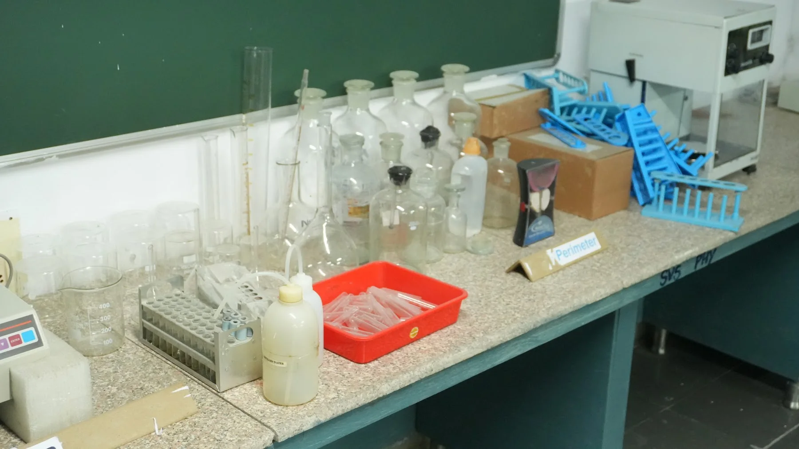
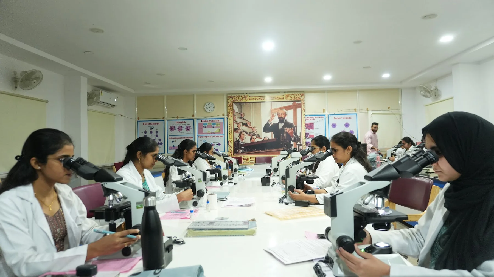
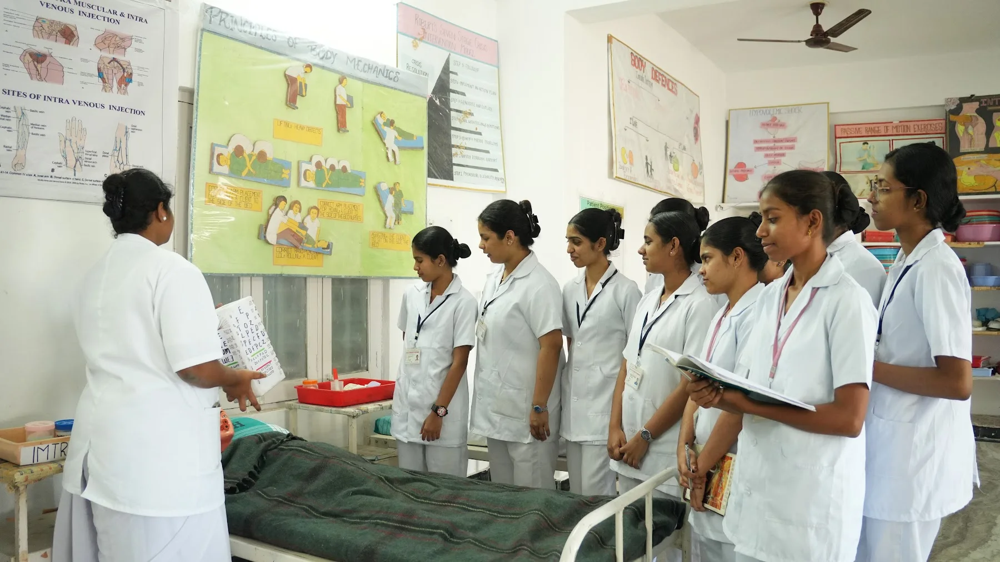
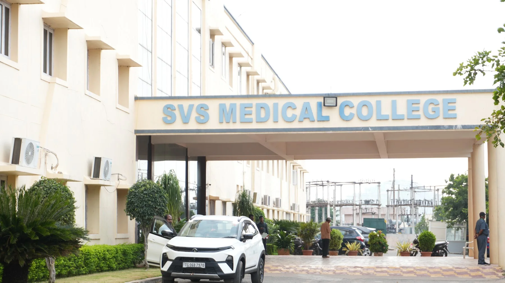
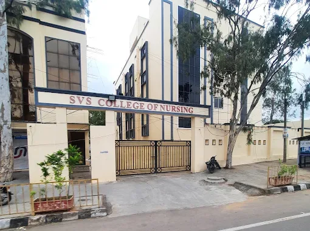

Advanced equipment for exceptional care
From 3.0 Tesla MRI and 128-slice CT to robotic-assisted surgery, explore the facilities supporting diagnosis, treatment and clinical training at SVS.
3.0 Tesla wide-bore MRI
Philips imaging system for diagnostic services
128-slice CT
Siemens computed tomography system
Ultrasound & Doppler
15 high-resolution diagnostic stations
Cath Lab & DSA
Flat-panel imaging for cardiac and vascular procedures
DEXA bone-density scan
Bone-mineral-density and fracture-risk assessment
Robotic-assisted orthopaedics
Precision robotic-arm systems for knee and hip replacement
Clinical simulation
High-fidelity mannequins and procedural task trainers
Operating theatres
23 suites with anaesthesia workstations and monitoring
Practical laboratories
Equipment for medical sciences and supervised practical learning
Teaching and caring since 1999
SVS has trained doctors in Mahabubnagar for more than two decades, with a teaching hospital at the heart of the campus and colleges for dental and nursing education alongside.
- 27+Years of medical education
- 3Colleges
- 19Academic departments
- 1,000+Teaching beds
- 39Clinical units
- 2,300+Daily outpatients
Find your place at SVS
Explore our colleges, find a course and speak to our admissions team.
 01 / Medicine
01 / MedicineSVS Medical College
Study medicine with clinical learning in the teaching hospital and community health centres.
Explore Medicine ↗ 02 / Dentistry
02 / DentistrySVS Dental College
A separate dental campus with its own clinics, dining and hostels. Staff quarters are located opposite.
Explore Dentistry ↗
03 / NursingSVS Nursing College
The nursing college and hospital are opposite the medical compound, with dedicated labs, wards and hostels.
Explore Nursing ↗